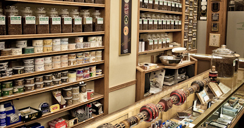

Winnipeg's Foremost Selection of Tobacco

Products - Tobacco
House Blends
Cavendish
- Amaretto Amore The amaretto flavor of this delightfully aromatic Virginia-black Cavendish blend fills the mouth with pleasure, as does its liqueur counterpart. Why amore? Because you will "love" the way this tobacco holds its flavor all the way down the bowl.
- Apricot Brandy This tobacco's extremely enticing aroma is derived from the skillful blending of five tropical flavors with brandy. Ribbon-cut black Cavendish is seasoned with high-grade, flue-cured Virginia and Kentucky burley tobaccos for a rich, generously sweet flavor.
- Brandywine Blended from superior golden African Virginias, burleys and mild black Cavendish tobaccos. Unique vanilla and chocolate flavors create an excellent taste and aroma.
- Broadway is an excellent, smooth, fragrant and flavourful black Cavendish. It is a great stand-alone smoke and a wonderful blender. It has a delightful vanilla character that is pronounced both in the pouch and in the room and yet is not at all overpowering.
- Brookfield is made from a rich black Cavendish, blended with burley for a cool, sweet smoke and charming aroma.
- Carlton is a top quality aromatic. We believe you will agree that this is the smoothest medium aromatic you have ever tried. It has a very pleasant vanilla aroma, and is easy-packing. It is rich and creamy, a true classic.
- Cherries Jubilee Popular demands was the inspiration for this cherry tobacco. Three deliciously different cherry flavors - refreshing Duke, fermented Maraschino and rich Kansas Sweet - grace this balanced blend of lemon Virginia and black Cavendish.
- Columbian Mocha A smooth, medium mixture of black Cavendish and Virginia tobaccos enhanced by the rich fragrance of dark chocolate and mellow Colombian coffee beans. This is one of our most popular blends.
- Cumberland is a coarse-cut, colourful blend, flavoured with vanilla. The larger cut makes it very suitable for smoking outdoors in any kind of weather.
- Eastgate A silky smooth, golden Cavendish with a pleasant nutty aroma.
- English Butterscotch This elegant mixture is made with flue-cured bright Virginia tobaccos from Canada, the United States and Brazil blended with black Cavendish and lightly flavored with a subtly fragrant butterscotch topping. Satisfying smoking and pleasant aroma will make this many smokers favorite tobacco.
- Georgia Peach This flavor has delighted American palates as far back as the Revolution. The basic combination of orchard fruit and honey can be found in the desserts known to have delighted Presidents Jefferson and Madison. A delicate balance has been achieved here. There is the real tobacco taste of the fine Virginias and burleys and black Cavendish but then there's always the hint of sweetness, the faint aroma of some fine confection. This is a classic.
- Highland Whiskey Mild to medium flue-cured Virginias from Zimbabwe and the Carolina's blended with sweet black Cavendish and a hint of toasted white burley. Generously laced with aged whiskey from the Scottish highlands for a distinctive flavor.
- Hornblower Developed with flue-cured tobaccos from the fields of Zimbabwe and Malawi. Blended with sweet processed black Cavendish and mild burley tobaccos. Fanciful fruit and vanilla flavoring awakens this blends outstanding taste and evocative aroma.
- Kentucky Cavendish is full-flavoured, yet soft and smooth. It’s a standard Cavendish-cut tobacco made primarily from fine Kentucky Burley’s for richness. A small amount of Virginia is added for refinement. The special heat-seasoning process sweetens the blend and unites the flavours. Then a blended cherry/berry top note is added to make this an irresistible treat for smokers who want their Burley flavour big.
- Longbottom Leaf Blended with the world's finest quality golden red Virginia tobaccos and a full touch of aromatic black Cavendish - "This great Dane doesn't bite!" A loose ribbon cut.
- Midnight is a traditional black Cavendish. It is sweeter, more refined and more satisfying than any tobacco of its type on the market. It burns slowly, is extremely soft and holds its rich flavour all the way down the bowl.
- New Haven Ribbon-cut for ease of packing and good burning. The addition of vanilla and aged black Cavendish give this blend a light but distinctive flavor.
- North Sea Our mildest black Cavendish blend. Additional steam and heavy heat pressure create this light aromatic blend. A loose cut.
- Norwood This tobacco is as appealing to the eye as it is to the palate. Shag cut golden Cavendish with a dash of fire-cured black for contrast. It has a lovely hazelnut aroma.
- Paradise Found Stoved and naturally aged, dark brown and black Cavendish. The essence of wild cherry and raspberry create a sweet smoke with a delightful aroma.
- Pimlico Golden crimp cut Cavendish with a touch of Black fire-cured. Delightful bouquet and flavor with no bite or harshness.
- Raspberries in Cream This is an elegant aromatic with the fragrance and flavor of fresh red raspberries in cream. Soft, light-bodied, artfully flavored, with mild American Virginia and black Cavendish, this blend is delicious all the way down the bowl.
- Red River This medium mixture is unusual for an aromatic tobacco. It is composed of black Cavendish and Carolina ribbon, and has had a rich vanilla and caramel aroma aged into the leaf using an English heat-seasoning process. This tobacco has an extra measure of softness along with its refined, sweet flavor.
- Rum Toddy is a wonderfully tipsy blend of lemon and orange flue-cured Virginias and sweet, mellow Black Cavendish. It is cooling to the tongue and warming to the soul. A blend that’s full of good cheer!
- South Seas is a mellow blend of sweet Virginias, nutty Burleys and mellow black Cavendish is flavoured with Brandy. It’s mild and rich. It relaxes and soothes and makes way for meaningful and winning perceptions.
- Stephen's Special A well-balanced blend of fire-cured and deep brown cavendish with a mellow flavor and exquisite aroma.
- Strawberry Fields Here is a cool, refreshing aromatic tobacco with the fragrance and flavor of fresh strawberries lightly laced with rum and a hint of citrus. Light-bodied, refined, sweet without being cloying, this mixture of lemon and orange Virginias and premium black cavendish makes a delightful smoke.
- Wellington is a satisfying, creamy blend of our best Virginias and smooth Black Cavendish flavored with chocolate. It has all the joy of a rich chocolate treat without the calories.
- West Hawk is a chocolate lover's delight, this rich Black Cavendish flavored with deep, dark chocolate will remind you of Grandma's oh-so-delicious devil's food cake.
- Wildwood has a wonderful black raspberry aroma, which distinguishes this well-rounded blend of Black and Golden Cavendish tobaccos. It is rich and smooth and very aromatic.
- Wolseley is rich with Toasted Cavendish, deep with Burley’s nut-like flavour, and brightened with just enough golden Virginia. It is mild and delightfully aromatic.
Traditional English Blends
- 925 is a reproduction of a classic English blend. It will be immediately familiar to longtime smokers, and a brilliant introduction to this style of tobacco for new converts to traditional mixtures.
- AM Pipe is a top-quality, traditional light English tobacco, perfect for smoking in the morning when there’s a nip in the air, the dew is on the grass and the day holds infinite possibilities.
- Balkan Blend A classic style medium Balkan mixture prepared from rich, stoved, eastern and middle belt strip; Cyprian Latakia; lemon Carolina; and the finest Greek Oriental tobaccos. There have been many requests for this type of tobacco in bulk.
- Bengal Lancer Related to our Drones Club and Orient Express mixtures with a similar base this is the fullest of the group. This blend is dark with Latakia, rich and satisfying without being overbearing.
- North York is a mixture of high-quality cube-cut Burley with a sprinkle of toasted black Cavendish and just a hint of Latakia. Slow burning with a natural, nutty flavour.
- Orient Express Soft and sweet, rich in light Orientals and Carolina tobaccos with somewhat less Latakia than Bengal Lancer. This is a fine all-day tobacco.
- PM Pipe is a rich English tobacco blend for later in the day. Full flavoured, best enjoyed after a great meal and perhaps with a nightcap.
- Regimental Standard It is rich with Latakia, spiced with the finest oriental leaf, mellowed with stoved Virginia and aged into a deeply satisfying, harmonious blend of the world's most exotic tobaccos.
- Turkish Evening A rich, full oriental mixture made for the modern taste. It is stout with lots of smoke cured Latakia and fragrant Turkish; with just enough naturally sweet matured Virginia for interest and balance. Then it is aged under pressure for several months to develop a tobacco that will bring the smoker so much pleasure he will howl like a banshee.
Blending Components
- Ashley's Cavendish Jet-black fire cured semi-sweet tobaccos discreetly flavored to produce a mild, slow, burning, cool smoke. Ashley’s is ideal for blending or to smoke alone.
- Burley Sandwich This rich burley blend is pressed before cutting to give it a rubbed-flake appearance and a density in smoking that assures coolness. A hearty tobacco with burley's characteristic depth of flavor made smooth by an exclusive heat-seasoning process.
- Carolina Ribbon is a beautiful, bright Virginia ribbon to give colour to your private blends.
- Dixie A high-grade Cavendish-cut Kentucky burley, refined by heat seasoning along with a small amount of Virginia. It offers big, uncomplicated burley flavor, yet is soft and smooth. A versatile blending component, it is also an excellent full-flavor smoke by itself.
- Latakia Top-grade, smoky, black Latakia comes in bales from Cyprus. Cut in ribbon form for use in blends. It is cool smoking with a woodsy, smoky aroma. Add it to medium mixtures to create a "fuller" blend.
- Midnight We feel smokers will find this to be sweeter, more refined and more satisfying than any tobacco of its type on the market. It burns slowly, is extremely soft and holds its rich flavor all the way down the bowl.
- Old Dominion is comprised of golden Virginias, mellow and ripe, blended to perfection and enhanced with a subtle aromatic fragrance.
- Pastry Shoppe A light bodied blend of seasoned, ribbon-cut, lemon tobaccos from Brazil. This blend is a delightful morning smoke, which provides a unique pastry aroma.
- Perique Rare and precious, this dark, fragrant condiment tobacco - cured in wooden casks - is from St. James Parish, Louisiana, where it has been produced in time-honored fashion since the days when the natives pressed it in tree trunks. Use it sparingly in your blends for its distinctive aroma and cool smoking character.
- Portage Trail Mild Maryland burley with a subtle hint of sweetness.
- Turkish Ribbon is blended from the finest Oriental tobaccos from Greece and Turkey cut in classic English-style ribbon form to add their delicate herbal/spicy scent and gentle sweetness to your own Oriental Mixtures.
Matured Virginias
- Admiral’s Club A unique mixture, in that it begins as a blend of very light lemon Virginias, leaf and cutter grade tobaccos which are transformed through pressure, aging and light stoving into a beautifully dark, pungent cake. It is sweet and rich without being as strong or stout in body as dark flakes have traditionally been.
- Classic Virginia is a blend made with Eastern and Middle belt lemon, orange and orange-red Virginas. A sweet, smooth, zesty smoke, it should be suggested to anyone looking for a light-bodied, naturally sweet, satisfying Virginia.
- English Cavendish is a pleasant, rather light, broken, small-flake tobacco made from lemon Brazilian and orange Middle Belt leaf seasoned with enough Xanthi to be satisfying throughout the day without becoming tiresome to the smoker. This is a fine tobacco for those who crave a taste somewhat rounder than that of a straight Virginia.
- Fragrant Virginia is rich and smooth and balanced in flavour and aroma. Stoved Virginia cake tobaccos bring depth to the rubbed-out red Matured Virginias in this pleasantly fruity, naturally spicy, fragrant all-Virginia mixture.
- Northern Comfort A really distinctive Virginia flake that will satisfy many aromatic smokers who have been sacrificing cleanness of burning to obtain a sweet aroma. It is often found preferable by those who have been smoking the various sweet, black tobaccos, traditional aromatic Cavendishes, and many standard aromatics because of its cooler, dryer smoking qualities and its natural tobacco taste.
- Old World is a matured cake blend of the finest lemon and orange-red Virginias, enhanced with natural fruit essences. It is lightly sweet, satisfying, smooth but with a little zest. This is Matured Virginia at its traditional best.
- Red Virginia A sweet, exceptionally soft, fully-rubbed matured Virginia cake, is a wonderful blending tobacco as well as a fine, medium-bodied straight smoke. This is an extremely high-grade, refined product.
- Virginia/Perique Flake is made from orange and red Virginias to which enough premium St. James Perique has been added to create a refreshing smoke with a satisfying richness and depth of flavour. This well-balanced, dark, matured cake is reminiscent of the Maritime flakes of the past.
Economy House Blends
- Outback Cavendish A rich, dark mixture of Danish and American toasted Cavendish. Hints of wild berry, mocha and vanilla bean combined in a well-balanced blend.
- Piccadilly A traditional English style blend. A variety of matured Virginia flakes - broken and partially rubbed out - with just the right amount of Latakia, Perique and Turkish added.
McClelland Tobacco - tinned
Matured Virginia
- No. 22 Virginia A balanced blend of eastern and middle belt Virginias aged in cakes to develop their natural sweetness. A zesty tobacco with rich undertones, coarse enough to smoke on windy days outdoors but easily rubbed out to suit any occasion.
- No. 24 Virginia An unusual form of flake tobacco, its deep chestnut color results from the extended aging of full flavored old and middle belt leaf very lightly seasoned with drama. A smooth, robust tobacco good anytime for those who prefer the darker Virginia flavors. It is especially well suited for outdoor smoking.
- No. 25 Virginia A balanced mixture of the smoothest and most refined red and black aged Virginia cake tobaccos in a fully rubbed form. It is ideal after dinner when a rich, satisfying flavor is most desired.
- No. 27 Virginia An excellent all-day, indoor smoke, this beautiful, orange-red, shag-cut cake has a mellow flavor and a light, subtle aroma.
- Navy Cavendish With this tobacco, we reintroduce the smoker to the traditional navy cavendish, pressed in cakes and aged naturally with dark Jamaican rum to achieve its rich depth of flavor, color and aroma.
Oriental Mixtures (English Style)
- Mixture No. 1 Exceptional smoothness and light aroma make this mild mixture an ideal morning and indoor smoke as well as a pleasant change of pace for matured Virginia smokers.
- Mixture No. 6 A balanced, old-style medium mixture, its robust flavor is due to liberal use of middle and eastern belt orange Virginias. This is an invigorating all-day or outdoor tobacco, both satisfying and refreshing.
- Mixture No. 8 An extremely refined medium mixture, a soft, round flavor due to the fully rubbed matured red cake tobaccos forming its base. It is lightly sweet, smooth and rich, a truly mellow smoke.
- Mixture No. 12 Rich and full-flavored, especially appealing in the evening; still, spiced gently enough with Latakia and Turkish leaf to be a superb occasional tobacco for the individual who normally prefers lighter mixtures and matured Virginias.
- Mixture No. 14 Dark with Latakia and black Virginias, deeply seasoned with Orientals, this is the classic full Scottish mixture.
Cigar Blends
- Dominican Glory has the flavour of a fine, mild cigar in a satisfying tobacco for the pipe. This blend of aged, premium Dominican cigar leaf is seasoned with Matured Virginia for balance and refinement and is presented in a wide ribbon form for cool smoking pleasure. For the best of both worlds, enjoy Dominican Glory in the pipe.
- Dominican Glory Maduro is a balanced blend of rich, dark maduro cigar leaf and matured red and stoved Virginia tobaccos. The perfect pipe tobacco for the connoisseur of maduro cigars who enjoys pipes. Pressed in cakes and aged to develop character and marry the flavours, then cut in flakes to be rubbed out to the smoker’s personal preference.
Personal Reserve
- Blackwoods Flake The characteristic, natural sweetness of mellow, red Virginias mingles inextricably with the richness and inherently spicy aroma of black stoved Virginias in this doubly aged red and black all Virginia cake mixture. An artistic achievement in tobaccos for the pipe, this beautiful mottled flake is incomparable in smoothness, balance and refinement.
- Dark Star Years before tinning, this tobacco begins as bright yellow, sugary top-grade Virginia and Carolina leaf. Through careful triple aging, pressing and stoving, it becomes rich, cool and dark. A seductively spicy aroma develops during the extended maturing process to complement the complex flavor of this concentrated, smooth broken flake, which is easily rubbed out to suit any situation.
- St. James Woods A highly sophisticated broken flake of matured red and black stoved Virginias pressed with the finest Louisiana Perique. This beautiful, mottled tobacco has an especially deep; rich character with that mysterious and compelling aroma that is Perique's alone. It is a truly satisfying delight for natural Virginia smokers.
- Bombay Court An exotic oriental mixture spiced with the finest, rare Turkish tobaccos, cut wide and enhanced by the naturally aromatic, cool character of just enough smoky Latakia. Matured Virginias fine-cut from aged cakes add their naturally sweet, full flavor to round and balance this superb blend.
- Bombay Extra Based on Bombay Court, with more darkened Virginias, a touch of Perique and increased Latakia, resulting in an enriched version of a unique and very popular formula. This blend provides added depth and complexity for those seeking a richer, fuller oriental mixture for after dinner and evening enjoyment.
- British Woods Full, rich and dark, heavy with fragrant Latakia, spiced with premium Macedonian tobaccos. Lightly sweetened with matured Virginias, this distinguished oriental mixture is slow-burning and cool smoking. It offers richness and depth plus unparalleled smoothness and refinement.
Blakeney’s Best Toasted Tobaccos
- Tawny Flake is offered in little, elegant flue-cured Virginia flakes, redolent with sun-dappled sweetness, and pleasantly tangy. This skillfully blended tobacco, mellowed with Blakeney’s exclusive toasting process, fills the pipe with pleasure.
- Acadian Ribbon is rich with Perique, tangy and pleasant to the tongue, this best ever Virginia-Perique blend fills the mouth with flavour and deepens in character as it is smoked. It is easy to pack and smooth to smoke.
- Bayou Slice consists of sophisticated small slices of the smoothest Louisiana Perique aged in cakes to mellow with sweet, zesty Matured Virginia – rich and satisfying, with Perique’s uniquely mysterious and compelling aroma, enhanced by Blakeney’s exclusive toasting process.
- Latakia Flake is a distinctive full English Mixture, rich with smoky Cyprian Latakia, fragrant with exotic Xanthi Yaka. Toasted for smoothness, then pressed in cakes to age and marry the flavours. The result is an exceptionally smooth, cool-smoking, full-flavoured little Levantine flakes ready to rub out.
Craftsbury Collection
- Virginia Woods Formulated for a smooth, rich flavor with an incomparable woodsy aroma. Blended from the finest matured red cake, stoved black Virginia, wide-cut bright Virginia and other premium tobaccos, Virginia Woods offers one of the ultimate expressions in fragrant matured Virginia blend smoking.
- Deep Hollow Far into the woods, away from the urban cacophony, is where this lightly fragrant blend of rich, red and black stoved Virginias is designed to transport you. Relax and enjoy the moment
- Grey Havens A harmonious blend of lightly fragrant matured Virginias and white burley with just a hint of Louisiana Perique. You experience the rich taste of fine natural tobaccos and those around you enjoy a mellow and pleasing fragrance.
- Frog Morton An exceptionally dark, rich and full Latakia mixture designed for those who desire really satisfying Latakia flavor but want a tobacco soft enough to smoke all day. It took Frog Morton four years to perfect this unique blend designed for smoking in quiet serenity. It is his proudest achievement.
- Frog Morton on the Town Frog Morton formulated this exceptionally mellow blend, fragrant with Basma, smooth and rich with Latakia, for his evenings at the opera. This is an elegant companion to the original soft, full Latakia blend.
- Frog Morton on the Bayou When floating on the Bayou, Frog Morton prefers this fine Balkan blend to which he adds just enough precious Louisiana Perique.
221 - B Series
- Black Shag Sherlock Holmes kept it in the toe of a Persian slipper nailed to the mantelpiece. It was dry and strong. Kept at what we today have deduced to be proper smoking moisture and smoked gently, this excellent stoved shag will provide hours of smoking pleasure. Examined the ash carefully.
- Arcadia It was said to be of such arresting character and delicacy that it stopped all conversation. Holmes recognized it by its characteristic fluffy, white ash. It was Dr. Watson's favorite. It is our hope that this formula, deduced after careful study of several vintage examples of what was known as the original and made available to us by dedicated collectors, will please the most discriminating smokers.
- Honeydew The sweet, fragrant Honeydew was all gone by the time Susan Cushing offered the container to Sherlock Holmes, but he was undoubtedly familiar with this fine Irish flake's gratifying flavor, pleasing aroma and gentleness on the palate.
Syrian Latakias
- Rose Of Latakia is a complex, delicate, fragrant blend. Only the most precious, most flavourful leaves are called Rose of Latakia. It is a wonderful morning smoke.
- Syrian Full Balkan is mild, and cool-smoking, rich with Syrian Latakia’s unique, exotic fragrance.
- Syrian Super Balkan is mellow, fragrant, and lavishly flavourful from start to finish. It is seasoned with the finest Louisiana Perique.
Premium Aromatics
- Mellow Mack The mildest and smoothest of pipe tobaccos. As the name implies, this is a mild, smooth, rich pipe tobacco that improves throughout the smoke. The aroma tends toward wild honey and, perhaps, pecan.
- Captain Cool The coolest smoking of pipe tobaccos. This is a cool-smoking, mild pipe tobacco that will not bite the tongue. Captain Cool is lightly fragrant with a hint of vanilla and a touch of mint. It is always appealing.
- Pal O’Mine is a pleasant companion, never harsh or rough. Quiet, soothing, always agreeable, the pipe is a fine pal when filled with this ever-civil, mellow blend. The subtle fragrance is vaguely reminiscent of Grandma’s special peach cobbler.
- Town Topic is rich with the caramel-like taste of fine Black Cavendish, and mildly nutty. This tranquil blend is topped off with a refined maple flavouring for a full flavour that is the talk of the town. Big flakes of bright Virginia add a calmly audacious note.
- Tastemaster is a first-rate chocolate-flavoured tobacco. It is genteel on the palate, and abundantly flavourful throughout owing to the excellence of the superior tobaccos chosen for this masterful blend.
- Best Of Show is a blue-ribbon blend of America’s finest tobaccos. You’ll judge it full-flavoured, satisfying, and mild. We have polished it off with nougat flavouring. It’s tastefully opulent and a winner.
- Easy Street has a whisper of English Walnut which perfects this elegant Black Cavendish. It’s cool as the coolest jazz, soft as velvet nights, rich and creamy. Smoke it and you’ll be on Easy Street.
Royal Cajun Series
- Royal Cajun Ebony is black, smooth, sweet, smoky and absolutely rich. This blend of Virginias and Kentucky leaf demonstrates the magic that occurs when flue-curing; stoving, fire curing and Perique-style processing meet in a gloriously complex explosion of flavour.
- Royal Cajun Dark is a blend of five exceptional red and stoved Virginias seasoned liberally with cool, subtly smoky Cajun Black. It is an incredible smoking experience, deeply rich in flavour, compelling in aroma, and yet exquisitely mild on the palate.
- Royal Cajun Special is created from two dark stoved Virginias and one wide-cut lemon Virginia expertly blended with Cajun Black. This blend is one of a kind, ethereally smoky, deeply rich and incredibly complex. Cajun Black’s fire curing and Perique-style fermentation cool the Virginia’s natural sweetness.
Grand Orientals
- Classic Samsun grows in the Black Sea region of Eastern Turkey. We have secured the finest Samsun Maden-Canek leaves. They are small, thin and elastic with a mellow, pleasant, distinctive aroma. Their sweet taste is like the sweetness in a nutmeat or sunflower seed. They come from the hinterland of Samsun, mainly to the west of the Yesih Irmak river delta where the climate is very similar to the best Macedonian and Thracian growing areas. Samsun and all classic Oriental leaves are picked one-by-one, as they ripen, like flue-cured Virginias. If picked too soon so that the sap remains in the leaf during air and sun drying, the sugars will evaporate with the sap. If allowed to ripen too much on the plant, the leaf will be dry and shatter. Tobacco farmers of the classic Samsun growing areas have elevated these harvesting and curing processes to high art. In this blend taste what comes of 350 years of experience.
- Katerini Classic comes from a very important tobacco producing area southwest of Thessalonica on mountain slopes of mainland Greece. The small, heart-shaped leaf that takes the area’s name and makes it legendary is grown from Samsun seed. Katerini leaf is light golden in colour, delicate, elastic, porous and robust. It has a subtler aroma than Samsun but notice its especially sweet, mild curry-like flavour in this fine blend.
- Yenidje Supreme / Yenidje Highlander Oriental tobacco cultivation began in the 1600’s around the villages of Yenidje and Kirdzhali after Venetian and Genoese traders introduced tobacco smoking to the area in the 1500’s. The classic Basma seed introduced there over 300 years ago is believed by some to derive from an ancient Venezuelan variety of Nicotiana Tabacum named Barinas. The very finest Xanthi still comes from the original Yenidje ( Genesala ) area of Western Thrace just north of the modern town of Xanthi. It is the Xanthi-Djebel-Basma that comprises the legendary Yenidje leaf, which is thin, full-bodied, and flexible, with fine veins. Full of oils, the best leaves are quite small, yellow to brown in colour, with a pleasant, delicate aroma and sweet, mild, fresh flavour. Taste these blends (Supreme without Latakia, Highlander with Latakia) and discover why this particular classic Xanthi with its refreshing sweetness is known as “The Queen of Tobaccos”.
- Black Sea Soukhoum is grown on the mountain slopes in Georgia beyond the far Eastern shore of the Black Sea. It is considered by many to be among the finest Oriental tobaccos grown. Soukhoum is a strain of Samsun seed and the leaves have the appearance of Samsun and share a very similar aroma, but notice how the flavour has a quality that is almost cigar-like, rich and deep and mellow in this blend. Soukhoum is the Easternmost of the classic Orientals.
- Yenice Agonya is the famous Turkish tobacco from the Sea of Marmara district of Yenice which lies to the southeast of Canakhale. This is the anciently famous area of Troy or Ilium south of the Hellespont. The Hamdibey or Agonya district plants the Agonya seed, a Kabakulak variety of Xanthi origin. Agonya leaves are wide, fine-textured, and oval with bare stems. This blend is designed to highlight Agonya’s mellow taste and subtle fragrance.
- Drama Reserve is sweet and subtle with a natural olive oil-like fragrance. It is grown on the Southern slopes and foothills of the Rhodope Mountains, the classic Drama Basma District in Greek Eastern Macedonia, and it includes the renowned Mahalla tobacco as about 25% of the blend. It is refreshing, delicate, and intriguing. This blend is designed ( without Latakia ) to demonstrate just why the classic top-grade Drama leaf is so celebrated.
- Smyrna No. 1 is made from tiny, No. 1 grade tobacco leaves from mountainous Western Turkey across from the island of Khios. They have long been prized as the most aromatic of all Orientals. They grow dense and extremely fragrant in this dry country moistened by Mediterranean Sea breezes. Look for a whole Smyrna leaf on top of the tobacco when you open the tin. Notice the tiny hole where it was strung up by hand to air cure in a time-honoured, labour-intensive process. There is no Latakia in this blend. Smyrna is the defining ingredient in this sophisticated Oriental tobacco. Our intention here is to spotlight the character of this extraordinary, delicate leaf.
Collector Blends
- Beacon is a vintage Matured Virginia flake tobacco smoothed by extended aging, delicately seasoned with deeply aromatic Louisiana Perique.
- Aurora offers the full spectrum of Matured Virginia flavour from naturally sweet, mellow red to rich, deeply aromatic black stoved lemon Virginia.
- Jubilee is made from the finest sugary Matured Virginia, premium Latakia, delicate Turkish and precious Louisiana Perique. It is a blend that should age very well in the tin.
- Orient 996 is a very special blend of sugary bright Virginia and aged mellow red Virginia, seasoned with a good amount of rare Yenidje and a touch of Syrian Latakia. It is ready to enjoy now but designed to age beautifully.
- Tudor Castle is a beautifully balanced blend of sugary bright Virginia, a good amount of rare No. 1 Grade Yenidje, red Virginia and a nice touch of St. James Perique. It is a great smoke today and should age and mellow beautifully in the tin.
- Tudor Castle Arcade begins by being pressed into cakes, and aged to perfection. This blend of naturally sweet Virginias, fragrant Katerini, rich Louisiana Perique and just a touch of Syrian Latakia is an exceptionally smooth and cool smoke that is suitable for a stroll along the castle arcade.
- Three Oaks Original has been called a modern-day classic. Generous amounts of the finest Cyprian Latakia are balanced with premium Oriental tobaccos and sweet Virginia leaf. It is rich, yet cool-smoking from the tin. Three Oaks matures gracefully, developing sweetness and additional complexity.
- Three Oaks Syrian is made from rare Syrian Latakia, with its renowned mellow smokiness, and balanced with naturally sweet Oriental tobaccos and aged Virginia leaf to create a satisfying blend reminiscent of classic Syrian Latakia of old.
- Legends is made using a generous portion of rich, top-quality Cyprian Latakia which provides support and structure for dark stoved and red Virginas, deftly combined with Orientals, including Mahalla and the finest Drama. It is reminiscent of the legendary, complex blends of times gone by, and is a smooth, and deeply smoky ribbon-cut blend that tastes at once bold and subtle. It is creamy with soft, quiet background hints of plum or currant.
- Wilderness is a remarkable blend that provides a multi-layered, rich taste experience. The highest quality Syrian Latakia combines with small amounts of Cyprian to form the base for an exquisite array of rare and precious Orientals, sweet Drama, exotic Yenidje, and more. Red Virginias complement the blend, adding sweetness, richness, strength, and creaminess. Smoke this mixture and listen for the echoes of savoured memories.
Ashton Blends
- Black Parrot is a balanced blend with Virginia, Carolina and pure Louisiana Perique. This unique square-cut pipe tobacco encompasses flavour, maturity, and mellow smoking. The several growths interact and the skill of the blender is exercised in arriving at a balance to tempt the palate. Rediscover this classic. You’ll be richly rewarded.
- Sovereign is a classic English mixture made with Syrian Latakia, Turkish Djubec, matured jet-black Cavendish, Bright Carolina and Red Virginia. Pressed and matured in Scottish-style cakes before spinning into ribbon form, this is a true connoisseur’s tobacco for those who are seeking that elusive, ultimate Latakia mixture.
- Pebblecut is made from selected red mottled leaf from Carolina, rich in flavour and oils, small Oriental leaves from Macedonia of piquant aroma, bright nut-flavoured broad leaf from Virginia, and pure Louisiana Perique which all combine to form the framework of this blend which is then hard-pressed and lightly stoved to smooth and enrich. Pebblecut long-flake pipe tobacco is savoury with a concert of ever-changing flavours, always intriguing, never dull.
- Old Dog is one of the most loved items in this series. This is a full English mixture, dark with cool, smoky Cyprian Latakia, and spiced with fragrant Xanthi from Macedonia. These tobaccos marry under with aged, sweet flue-cured Virginas and smooth jet-black Cavendish to create a very rich, satisfying blend with a tin aroma that is incredibly appealing. You might want to sit back comfortably to ponder the meaning of life with Old Dog as your companion.
- Brindle Flake captures the natural sweetness of the fine Virginia tobaccos in this flavourful blend by flue curing them. Aging in cakes softens them into elegance. This partially rubbed flake harkens back to English days of old. It burns with regal restraint to a mottled white ash. It is a friend with strong character and considerable charm.
- Oldchurch is an aromatic pipe tobacco of incredible delicacy. We spice this Matured Virginia with zesty Carolina and cake-age the blend for an added measure of smoothness before spinning into ribbon form and adding jet-black Cavendish for depth and richness.
Limited Edition
- Christmas Cheer continues a tradition McClelland began in honor of their 15th Anniversary, by introducing, each year, a limited edition, vintage tobacco of exceptional quality and unusual character.
- Holiday Spirit is a limited edition, premium aromatic tobacco, created especially for the holidays. McClelland introduced this gentle blend of Burley, Virginia, and Cavendish tobaccos, flavoured with dark rum, pecans, and cocoa for the 2008 holiday season. It proved to be so popular that they decided to bring it back each year as a seasonal treat. Happy Holidays!
- Anniversary is an elegant Matured Virginia ribbon-cut blend, naturally sweet with that clarity of flavour possessed only by the best Virginias. It is seasoned lightly with fine, cool-smoking Cyprian Latakia and aged for months to mellow. This blend was intended as a one-time special product in honour of the company’s 25th Anniversary in 2002. It was brought back in 2005 because of its popularity. It is packaged as all of their blends were in the beginning with a paper over wrap and a hot wax seal.
Tips for Enhanced Smoking Pleasure
- Filling Your Pipe:
- Always fill your pipe in layers. An evenly, firmly packed pipe will burn slower and cooler. When this is done right you should have some resistance when you draw air through the stem. Imagine the resistance you meet when drinking a milkshake.
- Lighting Your Pipe:
- An even light can only be obtained by lighting three times. Light your pipe as uniformly as possible, lightly tamp the tobacco and light your pipe again. On the third light you might notice the flame from the match seem to “jump up” from the tobacco. This is a good sign that you have lit it properly and it should burn as a surface.
- Smoking Your Pipe:
- You want slow cool smoke. Draw gently on your pipe and savor the flavour of the tobacco. Relax and enjoy the moment. Remember, pipes are to be tasted, not inhaled.
- Caring for Your Pipe:
- Keep your pipe clean and sweet smoking. Use pipe cleaners frequently to remove any residue and always empty your pipe of all ash and any unused tobacco as soon as you are done smoking.